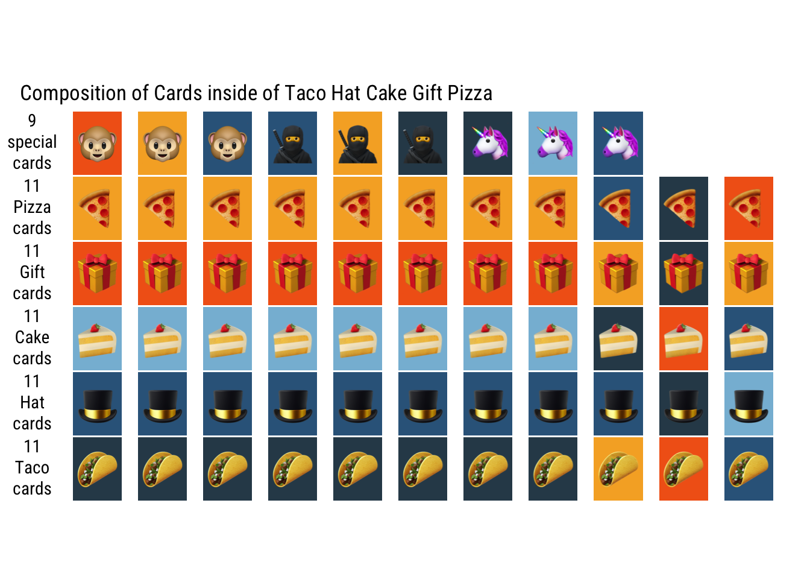

Over the Christmas holiday, my niece and nephew introduced me to Taco Cat Goat Cheese Pizza, a game that’s equal parts chaotic and hilarious. Imagine trying to slap a card while screaming “TACO!†but your hand freezes like it forgot its job. ğŸ–ï¸ğŸŒ®
My niece and nephew absolutely crushed me — I like to blame that I’ve had one too many cookies and was too slow 🍪🍫🍷.
But even in defeat, I had so much fun that I decided I needed a version of this game at home. So, I went ahead and bought Taco Hat Cake Gift Pizza (because, let’s be honest, who can resist a ninja 🥷 and unicorn 🦄?).
Crafting the Card Deck
Pakcages Used in This Blog Post
library(tidyverse) # Easily Install and Load the 'Tidyverse'library(ggforce) # Accelerating 'ggplot2'library(ggtext) # Improved Text Rendering Support for 'ggplot2'library(ggimage) # Use Image in 'ggplot2'library(fs) # Cross-Platform File System Operations Based on 'libuv'
When I opened the game, I found myself fascinated by the simple yet clever design of the card deck. It’s a perfect balance of “base†cards (like Taco, Hat, Cake, Gift, and Pizza) and “special†cards (Monkey, Unicorn and Ninja). Naturally, my data-nerd instincts kicked in, and I thought: Why not recreate this deck as a dataset in R?
Using the tidyverse, I created a small dataset to represent the deck. Instead of manually duplicating rows to match the card counts, I used one of my favorite hidden gems in tidyverse: uncount() in tidyr package.
If you’ve ever struggled to expand a dataset by repeating rows based on a count column, uncount() is a lifesaver. In just one line, it takes a column like count and automatically duplicates rows the specified number of times. I actually didn’t know this function till fairly recently.
Visualizing the Card Composition
With the deck dataset ready, I couldn’t resist visualizing it. Using ggplot2 and ggimage, I created a colorful layout that shows the composition of cards in Taco Hat Cake Gift Pizza.
Here’s the plot:
Layout Out Base & Special Card
cards |>arrange(type) |>#slice_sample(n = nrow(cards)) |>#mutate(player=c(rep(c("A","B","C","D","E"),times=12),"X","X","X","X")) |>mutate(grp=if_else(type=="base",card,type)) |>mutate(grp=fct_inorder(grp)) |>group_by(grp) |>mutate(idx=row_number()) |>ggplot(aes(x=idx,y=grp)) +geom_tile(aes(fill=I(color)), width=0.75, height=0.97) +geom_image(aes(image=emoji_img, by="height"), size=0.1) +coord_fixed() +theme_nothing(base_family="Roboto Condensed") +geom_richtext(aes(x=0,y=grp,label=str_glue("<b>{n}</b><br>{grp}<br>cards")),data = . %>%group_by(grp) %>%summarise(n=n(),det=paste(unique(card),collapse="<br>")),family="Roboto Condensed",fill="transparent",label.colour="transparent") +labs(title=". Composition of Cards inside of Taco Hat Cake Gift Pizza")

Shuffling the Deck and Dealing to Players 🎲
Once the deck was ready, it was time to shuffle and deal. After all, what’s a card game without a bit of randomness? Using slice_sample(), I shuffled the cards, then distributed them to five imaginary players.
Here’s how the shuffled cards looked when dealt out, with any extra cards forming a “Left Over Pile”: